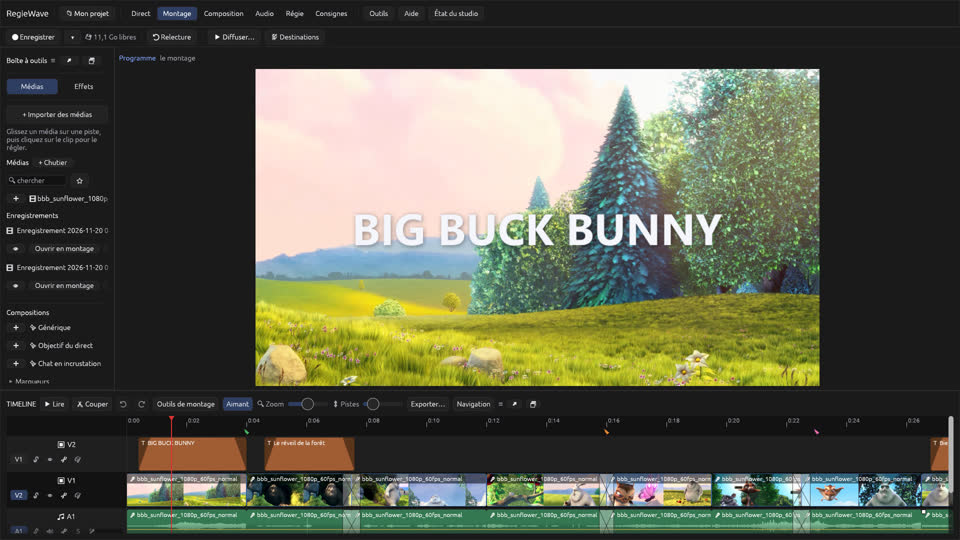
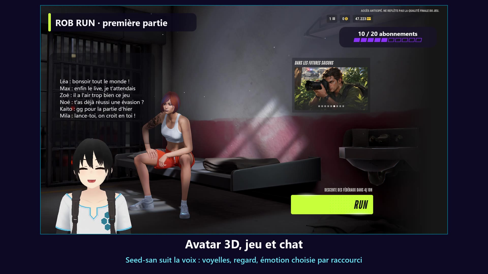

Le direct, la régie, le montage et la composition. Dans un seul logiciel.
Diffusez comme avec OBS, réalisez comme en régie, montez vos vidéos et animez vos titres, sans changer de logiciel.
Windows 10 (1809) / 11 · Linux 64 bits · en français, l'anglais est en cours




Un seul projet, tout ce qu’il faut
Les scènes du direct, les montages et les compositions vivent dans le même projet : un titre animé se crée une fois et sert partout.
Capture de jeu, d'écran et de fenêtre, webcam, vidéos, images, textes et pages web.
- Plusieurs destinations à la fois (Twitch, YouTube, Kick, SRT, WHIP), débit qui s'adapte à la connexion.
- Alertes et chat Twitch intégrés, objectif d'abonnés, chat commun Twitch, YouTube et Kick.
- Avatars PNGtuber, 3D (VRM) et Inochi2D qui suivent la voix ou le visage.
- Compatible OBS : import des scènes, contrôle par obs-websocket.
Toutes les scènes sous les yeux, aperçu et programme côte à côte.
- Multivue de toutes les scènes, avec la scène à l'antenne repérée.
- Barre en T, coupe et transitions, dont les stingers vidéo.
- Conducteur, bandeaux, prompteur et mémoire de relecture pour les ralentis.
- Sorties sur un écran ou en caméra virtuelle, scène par scène.
Tout se fait à la souris, sur une timeline à plusieurs pistes.
- Pistes d'image et de son, titres, fondus, vitesse, lecture inversée, arrêt sur image.
- Étalonnage, sous-titres, mixage avec automation, son 5.1.
- Export H.264, HEVC, AV1, ProRes, et échanges AAF, OTIO, EDL, FCP XML.
- Vos enregistrements du direct s'ouvrent directement en montage.

Des titres et des habillages animés, créés une fois, utilisés partout.
- Calques et images clés, courbes, expressions.
- 3D : relief, lumières, ombres portées, caméra.
- Suivi de mouvement, détourage d'un objet en un clic, retouche photo et PSD.
- Une composition devient une source du direct ou un clip du montage.
Tout ce que montre cette vidéo sort de RegieWave

L'enregistrement du direct pendant les changements de scène, puis une bande-annonce montée et rendue par RegieWave.
Puissant quand il faut, simple tant que possible
Gratuit
Sans abonnement ni filigrane. Ce que vous créez vous appartient, y compris pour le monétiser.
Simple d'abord
Des réglages simples par défaut ; tout le reste se déplie quand vous en avez besoin.
Respect de la vie privée
RegieWave n'envoie aucune donnée à son auteur. Les clés de diffusion restent dans le coffre de votre système.
Un seul projet
Scènes du direct, montages et compositions vivent ensemble : un titre animé se crée une fois et sert partout.
Un vrai son
Mixeur par scène, isolation de la voix, plugins CLAP, automation au montage et son 5.1.
Pensé pour durer
Mises à jour vérifiées par leur empreinte SHA-256, avec retour possible à la version précédente sous Windows.
Version alpha. RegieWave est encore en développement : beaucoup de fonctions n'ont été essayées que sur un seul ordinateur, pas encore avec tous les modèles de webcams, micros, cartes graphiques et services de diffusion. Faites un essai avant un direct ou un enregistrement important, gardez une copie de vos projets et signalez les problèmes : c'est ce qui fait avancer le logiciel.
Questions fréquentes
C'est vraiment gratuit ?
Oui : sans abonnement, sans filigrane et sans version payante cachée. Ce que vous créez vous appartient. RegieWave est fourni sans garantie et ne se redistribue pas ailleurs que sur cette page et sa page GitHub.
Sur quels systèmes ça marche ?
Windows 10 (version 1809) ou plus récent, et Linux 64 bits récent (AppImage). Pas de version Mac pour le moment.
Peut-il remplacer OBS ?
RegieWave peut importer vos scènes OBS et se piloter comme OBS (obs-websocket). Mais il est en alpha : gardez votre installation actuelle pour les directs importants tant que vous n'avez pas essayé RegieWave avec votre matériel.
Que devient ma vie privée ?
RegieWave n'envoie aucune donnée à son auteur. Il se connecte seulement aux services que vous choisissez (Twitch, YouTube…) et, si vous le demandez, à GitHub pour chercher une mise à jour.
Où signaler un problème ?
Dans les tickets GitHub. Dans RegieWave, « Aide → Créer un rapport » prépare un fichier à joindre, sans clé de diffusion ni mot de passe.
Prêt à essayer ?
Gratuit, sans abonnement ni filigrane. Tout est inclus dans l'installateur.